treg가 뭔가요
11월 13일, Jason Zhou가 X에 treg를 "오픈 소스 Higgsfield"라고 소개하는 글을 올렸어요. 발표자는 그를 Superdesign과 AI Builder Club을 만든 사람이라고 소개해요. 아래 게시물 캡처를 보면 내세운 건 세 줄이에요. 어떤 바이럴 영상이든 따라 만들고(Replicate any viral video), Claude Code나 Codex 안에서 바로 돌아가고, 오픈 소스라는 점이에요. 첨부 영상은 거대한 고양이가 뉴욕 거리를 걷는 장면이에요.
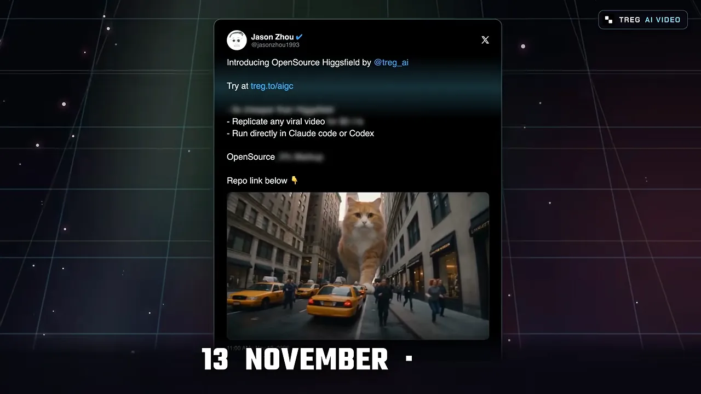
게시물 영상은 트렌드 찾기, 크리에이터 걸러내기, AI 크리에이터 만들기, 목소리 고르기 순서로 과정을 보여 주고, 마지막에 원본과 새 영상을 장면별로 나란히 놓아요. 왼쪽 Original(재생 400만 회)은 실제 크리에이터가 춤추는 영상이고, 오른쪽 Generated는 같은 구도에 새로 만든 AI 인물이 기모노 차림으로 서 있어요. 구도와 동작은 같고 사람만 바뀌었어요.
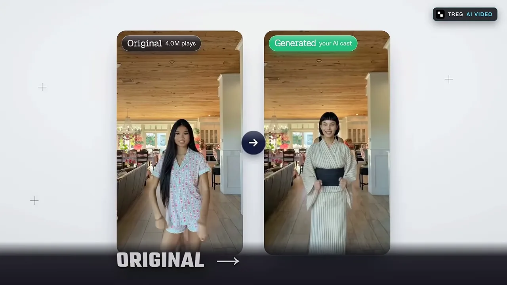
treg 자체는 도구 카탈로그예요
영상 생성은 treg가 하는 일 중 하나일 뿐이에요. treg의 본업은 AI 에이전트를 위한 도구 카탈로그예요. 팀은 "모델 대신 도구를 위한 OpenRouter"라고 설명해요. 연결 하나로 영상·이미지·음성 모델, 소셜 트렌드 데이터, 조사 도구에 닿고, 제공사마다 가입하거나 로그인 20개를 관리할 필요가 없어요. 에이전트가 하고 싶은 일을 말하면 treg가 맞는 도구를 찾아 줘요.
발표자는 127개 제공사의 4,100개가 넘는 도구라고 말하는데, 아래 카탈로그 화면에는 3,588+ tools라고 떠 있어요. 화면 위쪽에는 Enrichment, SEO(Search Engine Optimization)/AEO, Social 같은 분류와 도구 카드가 보여요.
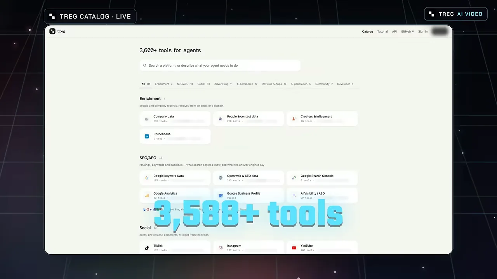
코드는 GitHub의 superdesigndev/treg 저장소에 공개돼 있어요. 누구나 읽고 확인하고, 자기 서버에 직접 돌릴 수도 있다는 게 발표자의 설명이에요.
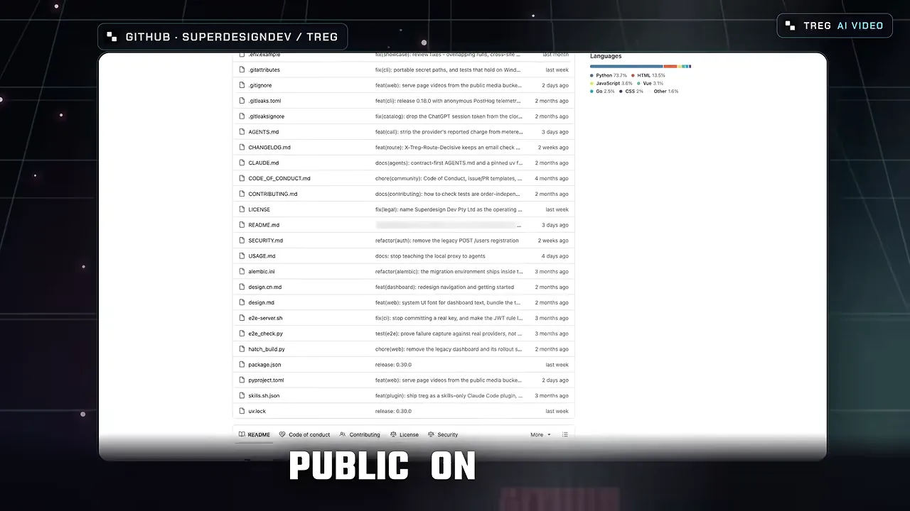
1~3단계: 조사, AI 크리에이터, 목소리
이번 발표의 중심은 treg에 들어 있는 ai-ugc-video 스킬이에요. UGC(User Generated Content)는 평범한 사람이 휴대폰으로 찍은 것 같은 영상이에요. 제품을 들고 카메라에 대고 말하거나 거리를 걷는 식이죠. 발표자는 광고처럼 보이지 않아서 지금 광고에서 잘 먹히는 스타일이라고 해요. 스킬은 에이전트가 추측하지 않고 순서대로 따르는 플레이북이고, 단계는 네 개예요. 에이전트가 Claude Code 안에서 전부 돌려요.
1단계 조사: 이미 잘 된 영상을 분해해요
에이전트에게 분야를 알려 줘요. 영상의 예시는 스트리트 패션이에요. 에이전트는 소셜 플랫폼에서 그 분야의 좋아요가 가장 많은 게시물을 훑고 하나를 레퍼런스 영상으로 골라요. 아래 화면의 벽처럼 늘어선 세로 영상들이 그 후보예요.
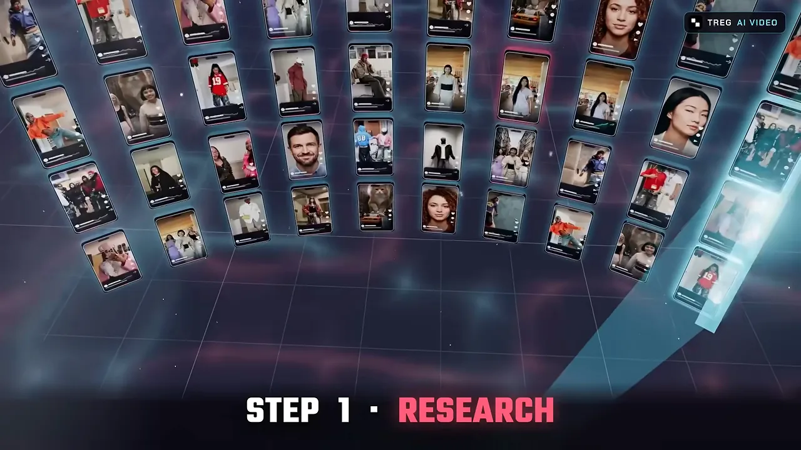
고른 영상은 분해해요. 첫 3초에 화면에 뭐가 나오는지, 초 단위 비트, 카메라 움직임, 빛이 오는 방향, 누가 언제 말하는지까지 적어요. 아래 공식 데모 화면은 그 분해를 Hook·Build·Payoff 세 칸으로 보여 줘요. 0~2초에는 'One girl, dead centre'(한 명이 화면 정중앙), 2~5초에는 'A second steps out from behind'(두 번째 사람이 뒤에서 나옴)라고 적혀 있어요.
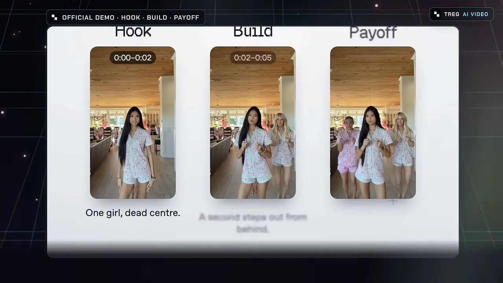
발표자가 꼽는 영리한 지점은 출발점이에요. 이미 바이럴이 된 게시물은 그 분야에서 통하는 구도, 속도, 인물 유형을 알려 줘요. 무엇이 될지 추측하지 않고, 사람들이 좋아한다고 이미 증명된 데서 시작하는 거예요.
2단계 AI 크리에이터: 얼굴·장소·소품을 먼저 고정해요
에이전트는 레퍼런스 영상 속 역할마다 새 인물을 처음부터 만들어요. 실제 인물을 쓰지 않아요. 인물마다 앞·옆·뒤 모습과 얼굴 클로즈업을 한 장에 모은 캐릭터 시트를 만들어요. 아래 화면 왼쪽에 'FRONT', 'WALK' 같은 라벨이 붙은 전신 컷이, 가운데에 'CREATOR 01' 얼굴이, 오른쪽에 'EYES' 클로즈업이 보여요.
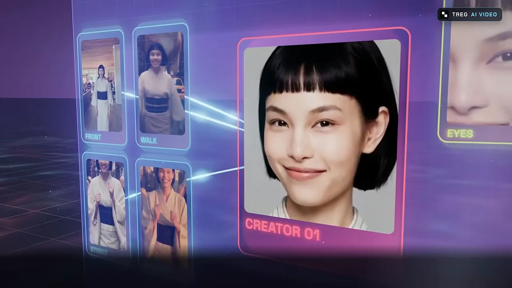
그다음 거리나 부엌 같은 빈 장소와 제품 같은 소품을 만들어요. treg는 이걸 에셋 잠그기라고 불러요. 이유는 비용과 시간이에요. 영상은 정지 이미지보다 만드는 데 훨씬 오래 걸려요. 그래서 얼굴·세트·제품을 단순한 이미지로 먼저 확정하고, 그 이미지를 전부 영상 모델에 레퍼런스로 넘겨요. 그러면 어느 테이크에서든 같은 사람이 같은 곳에 나와요. 광고마다 얼굴이 조금씩 달라지는 문제를 이렇게 막아요.
3단계 목소리: 라이브러리에서 들어 보고 골라요
에이전트가 Fish Audio의 영어 목소리 1,000개 이상을 훑어요. 사용자는 대사를 들어 보고 골라요. 아래 Voice library 화면에는 Selene(female · soft), Verity(male · cheerful), Slax(male · clear) 같은 후보가 성별과 느낌 설명과 함께 떠 있어요. 고양이 데모에서는 한 크리에이터에게 Chloe를, 친구에게는 다른 목소리를 붙였어요.
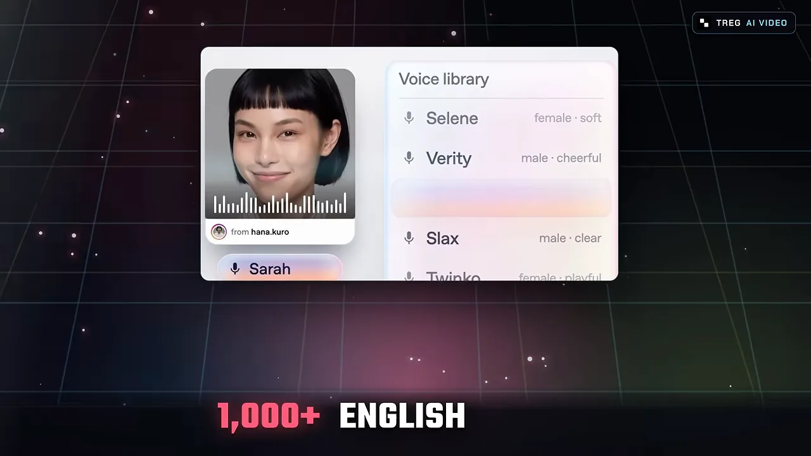
목소리를 따로 단계로 둔 이유는 목소리가 얼굴만큼 캐릭터를 살리기 때문이에요. 고른 목소리는 영상 모델에 레퍼런스로 넘어가고, 립싱크가 그 목소리를 따라가요.
4단계 영상과 스킬에 박힌 규칙
4단계에서 에이전트는 모아 둔 걸 전부 Seedance 2.5에 보내요. 발표자는 ByteDance의 영상 모델이고 지금 가장 강한 영상 모델 중 하나라고 소개해요. 아래 그림은 1~3단계에서 고정한 재료가 어떻게 한 번에 들어가는지 정리한 거예요.
화면에서는 왼쪽 위 'CREATOR' 얼굴과 왼쪽 아래 'LOCATION' 카드가 가운데 Seedance 2.5 아이콘으로 빨려 들어가고, 오른쪽에 완성된 세로 영상이 나와요. 결과는 바이럴 원본과 같은 포맷에 내 크리에이터, 내 제품, 내 대사가 들어간 영상이에요.
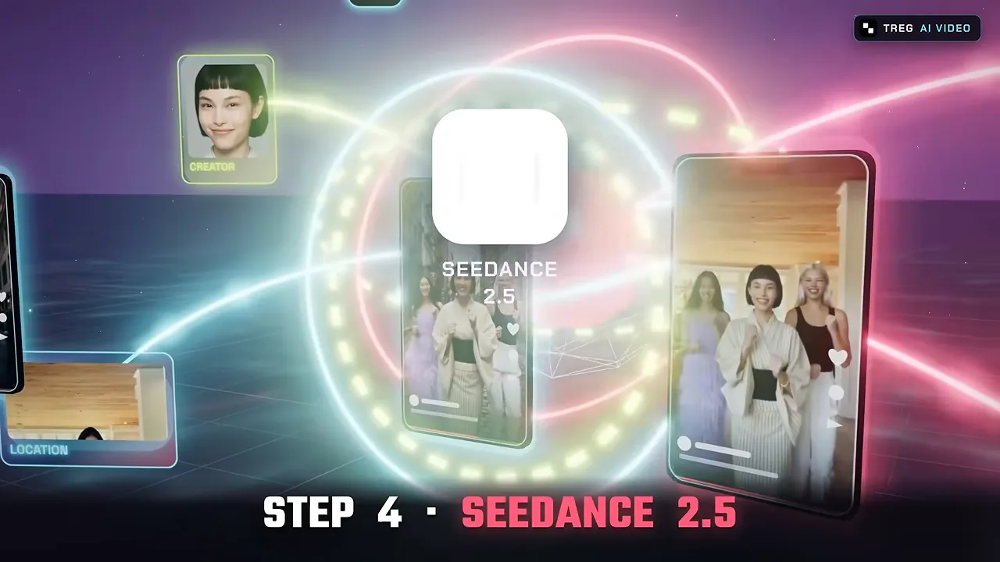
데모는 여기서 한 걸음 더 가요. 같은 영상을 A · Purple set, B · City street, C · Golden-hour rooftop 세 버전으로 만들었어요. 아래 화면의 세 휴대폰 화면을 보면 같은 세 인물이 같은 동작을 하는데 배경만 달라요. 셋을 광고로 돌려 보고 사람들이 어디서 멈추는지 보면 돼요.
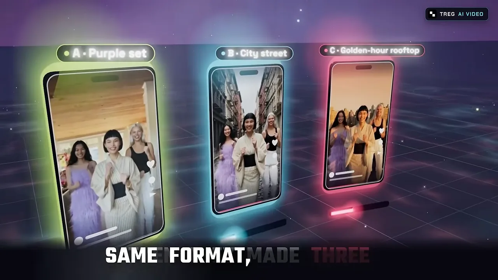
스킬에 박혀 있는 규칙
발표자는 스킬에 들어 있는 규칙이 좋다고 짚어요. 네 가지예요.
- 모든 프롬프트에 카메라 설명을 맨 먼저 써요. AI 영상을 진짜처럼 보이게 하는 부분이라서예요.
- 일부러 흠을 요청해요. 약간의 손떨림, 잠깐 초점이 헤매는 것, 보이는 피부 질감이에요.
- 저해상도 초안을 먼저 빠르게 만들고, 초안이 마음에 들 때만 최종 화질로 만들어요.
- 에이전트는 소리를 못 듣는다고 솔직하게 말해요. 그래서 최종본 전에 목소리는 사용자가 직접 확인해요.
아래 화면에서 필름 띠 위의 Handheld wobble, Focus that hunts 라벨이 두 번째 규칙이에요. 그 아래 카드는 1단계 분해 결과인 'HOOK', 'BEATS', 'CAMERA', 'LIGHT', 'AUDIO' 순서로 놓여 있어요.
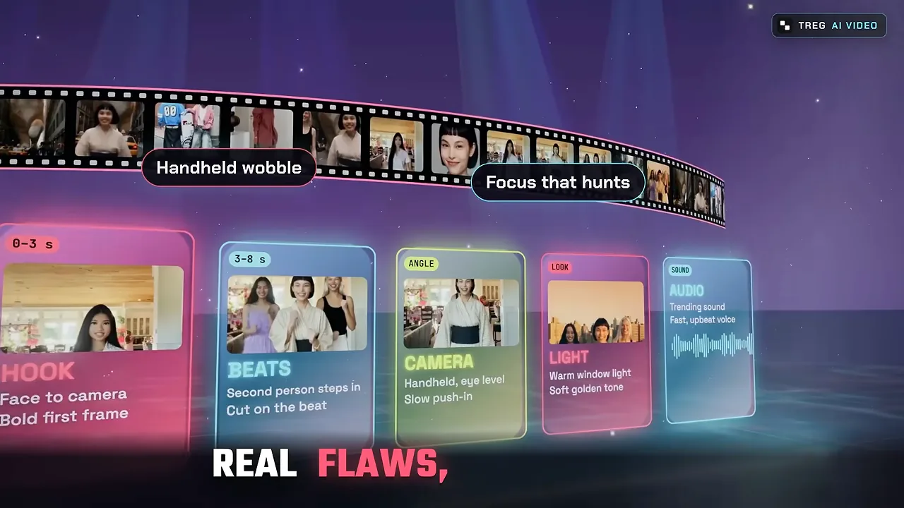
Higgsfield와 무엇이 다른가요
Jason이 treg를 "오픈 소스 Higgsfield"라고 불렀으니 비교는 피할 수 없어요. Higgsfield는 인기 있는 AI 영상 웹 앱이에요. 웹사이트에 로그인해서 프리셋을 고르고, 이미지를 올리고, 생성 버튼을 눌러요. 고를 수 있는 카메라 무브와 캐릭터 도구가 있고, 여러 최상위 영상 모델을 한곳에서 써요. 발표자는 Higgsfield가 자기 일을 정말 잘한다고 인정하고, 양쪽을 공정하게 다섯 가지로 비교해요.
첫 번째 비교는 일하는 곳이에요. 아래 표 화면의 Higgsfield 줄은 Their website · Click around, treg 줄은 Inside your agent · Talk to your agent예요. treg는 Claude Code나 Codex를 떠나지 않고, 팀의 영상 편집자에게 말하듯 에이전트에게 말하면 돼요.
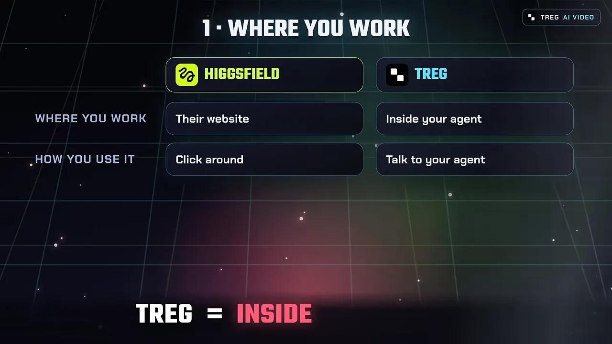
두 번째는 맡는 범위예요. Higgsfield는 요청하면 영상을 만들지만 조사, 대본, 캐릭터, 계획은 대부분 사용자 몫이에요. treg 스킬은 아래 화면의 Finds format → Makes creators → Picks voices 흐름처럼 포맷 찾기부터 분해, 캐릭터, 목소리, 촬영 계획, 영상까지 대화 하나로 끝내요.
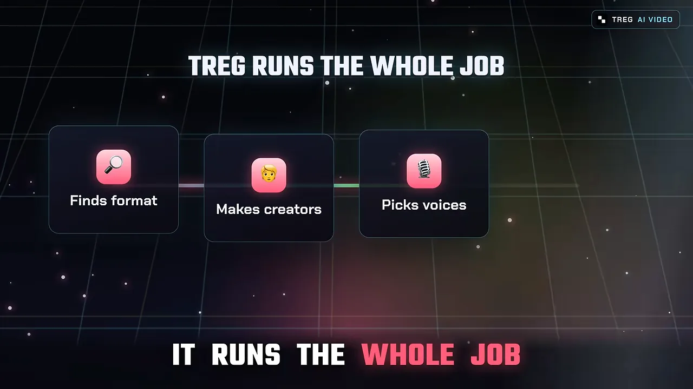
세 번째부터 다섯 번째까지 합쳐 다섯 가지를 표로 모으면 이래요.
| 기준 | Higgsfield | treg |
|---|---|---|
| 일하는 곳 | 웹사이트에서 클릭 | Claude Code·Codex 안에서 에이전트에게 말하기 |
| 맡는 범위 | 영상 생성. 조사·대본·캐릭터·계획은 사용자 몫 | 포맷 찾기부터 영상까지 전 과정 |
| 닿는 범위 | 영상·이미지 스튜디오 | 4,000개 넘는 도구 카탈로그. 트렌드 조회, 경쟁사 조사, 소셜 데이터까지 |
| 모델 | 여러 최상위 영상 모델, Seedance 2.5 포함 | Seedance 2.5, Veo, Wan, Hailuo, MiniMax(영상) · Nano Banana Pro, GPT(Generative Pre-trained Transformer) Image, Flux(이미지) |
| 공개 여부 | 닫힌 앱, 만든 쪽이 정한 방식대로 사용 | 코드 공개, 팀이 직접 돌릴 수 있고 내 제공사 키를 먼저 씀 |
네 번째 모델 비교 화면에는 가운데 고리 둘레에 Veo, Wan, Hailuo, MiniMax, Nano Banana Pro, GPT Image, 'FLUX' 이름이 흩어져 있고, 아래에 'ONE KEY'라는 글자가 보여요. 키 하나로 이 모델들에 닿는다는 뜻이에요.
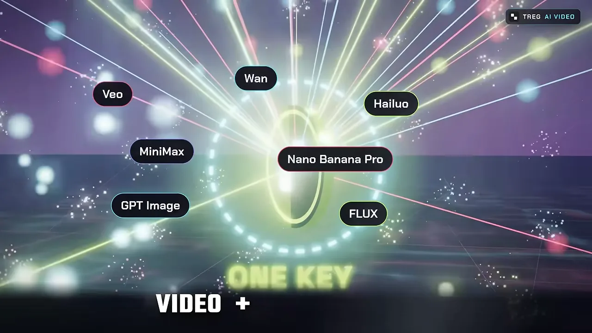
Higgsfield가 나은 경우
Claude Code를 열 생각이 없고 웹에서 버튼만 누르고 싶다면 Higgsfield가 더 단순해요. 다듬어진 화면, 많은 프리셋, 전부 눈으로 보이는 구성이 장점이에요. 발표자의 결론은 아래 'THE HONEST PICK' 화면 그대로예요. 클릭이 편하면(Clicking a website) Higgsfield, 에이전트로 일하면(Working with an agent) treg예요.
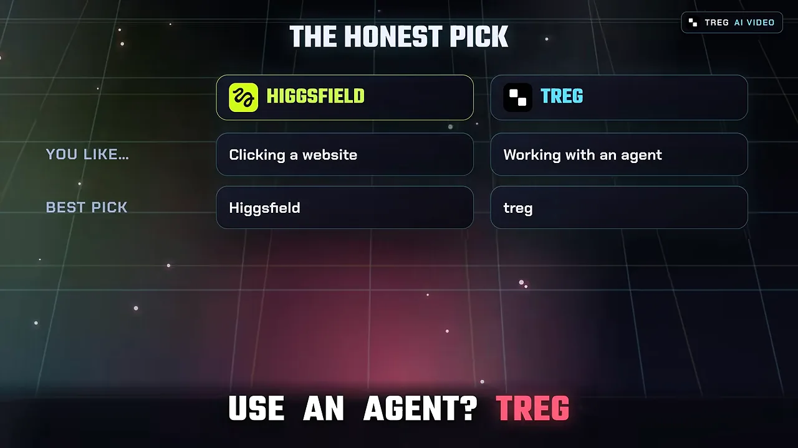
예전 방식과 새 방식, 그리고 쓰는 곳
발표자는 UGC 광고 하나를 얻는 과정을 예전 방식과 새 방식으로 나란히 놓아요. 아래 화면 왼쪽 'THE OLD WAY'에는 X 표시 여섯 줄이, 오른쪽 'THE NEW WAY'에는 체크 표시 여섯 줄이 있어요.
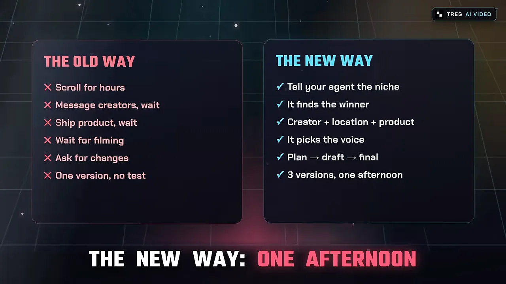
예전에는 몇 시간씩 잘 되는 영상을 찾고, 크리에이터에게 연락해 답을 기다리고, 제품을 보내 도착을 기다리고, 촬영을 기다리고, 수정을 요청했어요. 그렇게 받은 영상은 한 버전뿐이라 다른 걸 테스트하기 어려웠어요. 새 방식에서는 분야와 제품을 말하면 에이전트가 이기는 포맷을 찾고, 크리에이터·장소·제품 컷을 만들고, 목소리를 고르고, 계획 → 초안 → 최종본까지 가요. 책상을 떠나지 않고 오후 한나절에 테스트할 버전 세 개를 받아요.
누가 어떻게 쓰나요
발표자는 쓰는 사람을 셋으로 나눠 예를 들어요.
| 누가 | 예시 | 에이전트에게 시키는 일 |
|---|---|---|
| 온라인 스토어 | 스킨케어 세럼 | 지난달 좋아요가 가장 많은 스킨케어 영상 중 크리에이터가 제품을 카메라에 보여 주는 걸 골라요. 밝은 욕실에서 내 세럼을 든 AI 크리에이터가 자연스럽게 말하는 영상을, 손떨림과 창문 빛을 넣어 만들어요 |
| 후디 | 데모 같은 스트리트 포맷(친구 둘이 카메라 쪽으로 걸어오며 핏을 보여 줌)으로 세 장소 버전을 만들고, 클릭이 가장 많은 걸 봐요 | |
| 신제품 출시 | 제품 사진이 생긴 날 런칭 영상을 만들어, 재고가 들어오기 전에 광고를 준비해요 | |
| 에이전시 | 클라이언트 광고 | 제품과 가장 잘 팔린 광고를 받아 포맷을 분해하고, 브랜드용 크리에이터를 만들고, 광고마다 세 버전을 넘겨요 |
| 자체 마케팅·미팅 준비 | 사례마다 AI 발표자가 결과를 설명하는 짧은 영상을 만들어요. 조사 단계만 따로 써서 미팅 전에 클라이언트 분야의 인기 게시물이 왜 잘 되는지 분석해 가요 | |
| 콘텐츠 크리에이터 | 내 채널 | 아이디어 하나를 내 분야에서 이미 잘 되는 포맷에 맞춰 AI 발표자 영상으로 바꿔요 |
스토어 쪽에서 발표자가 덧붙이는 장점은 크리에이터가 고정돼 있다는 점이에요. 같은 AI 크리에이터가 가게의 모든 광고에 나오니, 고객이 늘 영상에 나오는 실제 사람을 알아보듯 그 얼굴을 알아보기 시작해요.
에이전시 쪽은 아래 'THE AGENCY AD BATCH' 화면처럼 Client product → Winning format → Brand creator → 3 versions each 순서로 일이 흘러가요.
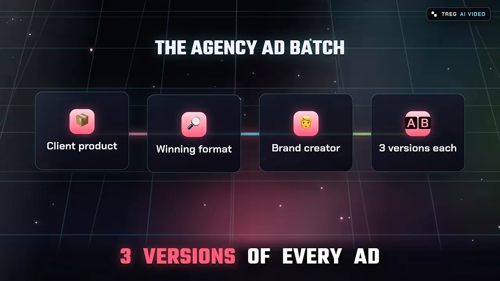
설정 방법과 흔한 걱정
설정은 메시지 두 개를 붙여 넣는 걸로 끝나요.
- Claude Code나 Codex를 열어요.
- 첫 메시지를 붙여 넣어요 —
Read treg.to/llms.txt and set up treg에이전트가 설정 안내를 읽고 treg CLI(Command Line Interface)를 설치한 뒤 로그인을 요청해요. GitHub, Google, 이메일로 받은 코드 중 하나로 로그인해요 - 두 번째 메시지를 붙여 넣어요 —
Follow treg.to/skills/ai-ugc-video/skill.md to make me an AI video from a viral reference - 에이전트의 질문에 답해요. 분야, 제품, 캐릭터, 목소리를 한 번에 하나씩 물어요. 영상을 만들기 전에 계획을 보여 주고 승인을 받아요. 동의하기 전에는 아무것도 만들어지지 않아요
아래 화면은 첫 메시지가 읽게 하는 설정 파일('TREG.TO/LLMS.TXT · THE SETUP FILE')이에요. 아래쪽 띠에 'STEP 2 · PASTE INTO YOUR AGENT'와 붙여 넣을 문장이 보여요.
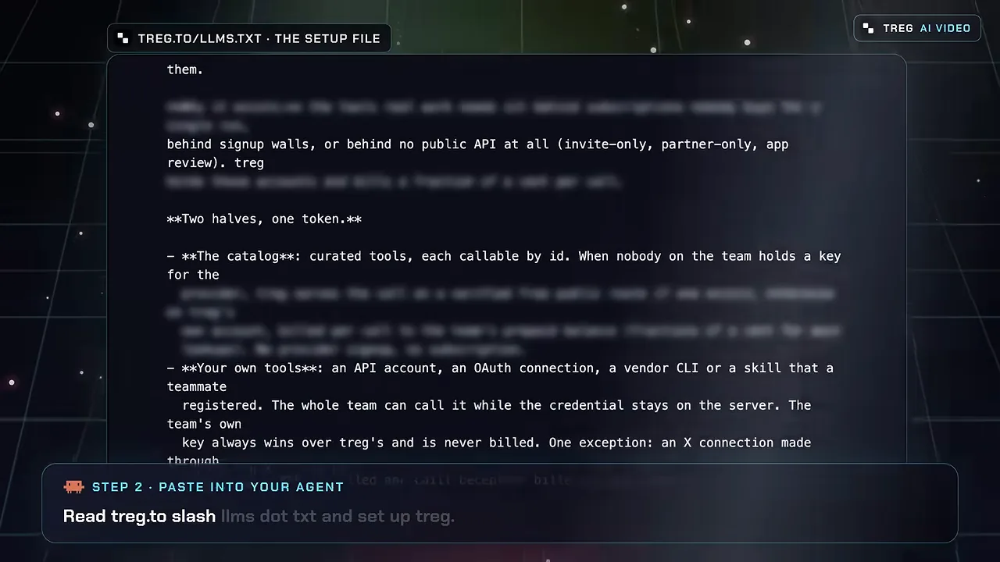
두 번째 메시지를 넣은 뒤의 실제 Claude Code 세션 화면이에요. 사용자가 Lumen Serum이라는 가게용 영상을 요청하자, 에이전트가 Stage 1 Research부터 시작한다고 말하고 단계 다섯 개(Research, Assets, Voices, Shoot plan, Video)를 나열해요. 단계마다 승인을 받고 넘어간다는 문장도 보여요.
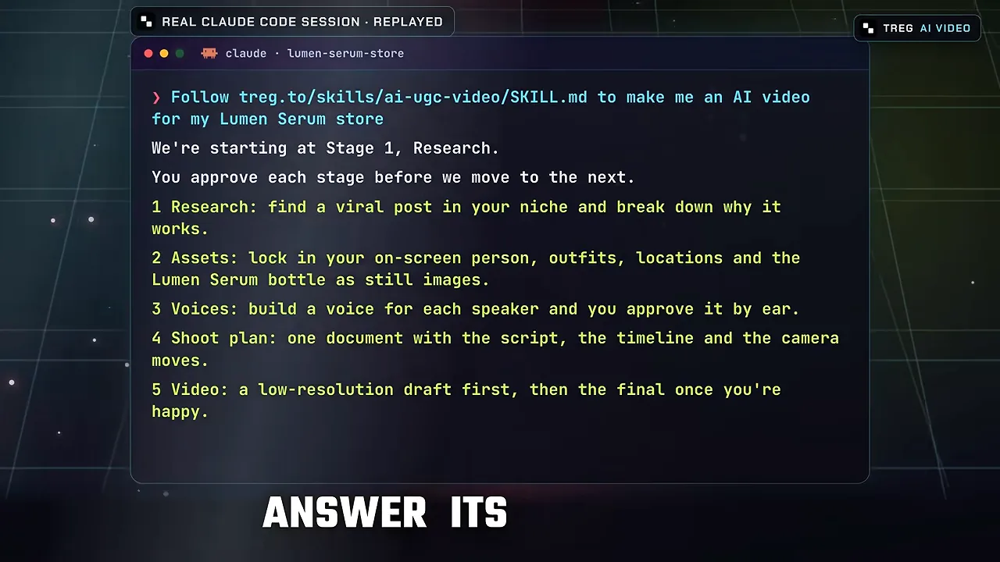
발표자의 팁은 하나예요. 이미지 단계에서 전부 확정하세요. 얼굴이나 제품이 이상하면 영상을 요청하기 전에 거기서 고쳐요. 최종 영상이 한 번에 제대로 나오게 하는 가장 큰 요인이라고 해요.
흔한 걱정 세 가지
기술을 몰라도 되나요? 코드를 쓸 일은 없어요. 메시지 두 개를 붙여 넣고 평범한 말로 질문에 답하면, 설정은 에이전트가 해요.
광고에 AI 크리에이터를 써도 되나요? 발표자가 처음부터 예고한 규칙이 여기서 나와요. treg 플레이북에 적힌 원칙이에요.
Remix the structure of a viral post, never the people in it.
바이럴 게시물의 구조는 리믹스하되, 그 안의 사람은 절대 따라 하지 마세요.
— 영상 14:27
실제 크리에이터의 얼굴, 실제 크리에이터의 목소리, 유명인을 흉내 낸 목소리는 쓰지 않아요. 포맷을 베끼지 사람을 베끼지 않는 거예요. 발표자는 여기에 두 가지를 더해요. AI 영상에는 AI라고 표시하고, AI 크리에이터를 실제 고객이 남긴 실제 후기처럼 내세우지 말라는 거예요. 제품이 하는 일을 정직하게 보여 주면 광고의 신뢰도도 지키고 어느 플랫폼에서든 안전하다고 해요.
내 사업에 맞나요? 카메라로 보여 줄 수 있는 걸 팔거나, 그런 고객의 광고를 만드는 에이전시라면 맞아요. 제품, 서비스, 사례, 출시 무엇이든 포맷이 내 분야에서 이미 잘 되는 것에서 나오니까 남의 시장이 아니라 내 시장에 맞춰져요.
이번 주에 해 볼 일
발표자가 제안하는 순서는 아래 화면의 네 카드 그대로예요.
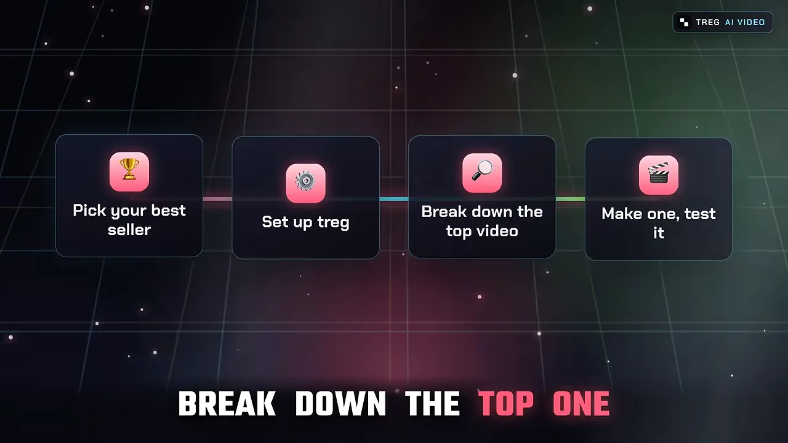
- 가장 잘 팔리는 제품이나 가장 중요한 고객을 골라요.
- 메시지 두 개로 Claude Code에 treg를 설정해요.
- 내 분야에서 좋아요가 가장 많은 영상을 찾게 하고, 1위를 분해하게 해요.
- AI 크리에이터 하나, 장소 하나, 영상 하나를 만들어 지금 가장 잘 되는 광고와 비교해요. 한 번에 영상 하나씩 테스트해요.